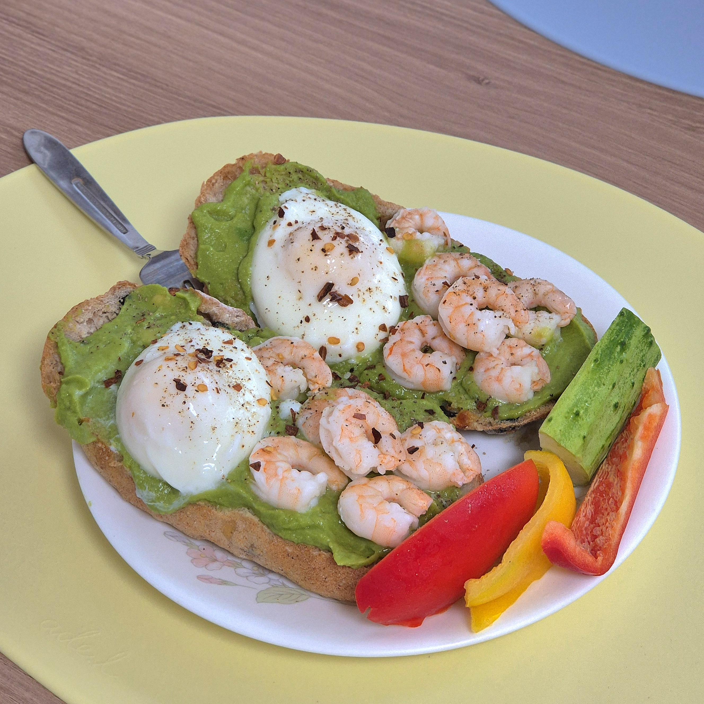
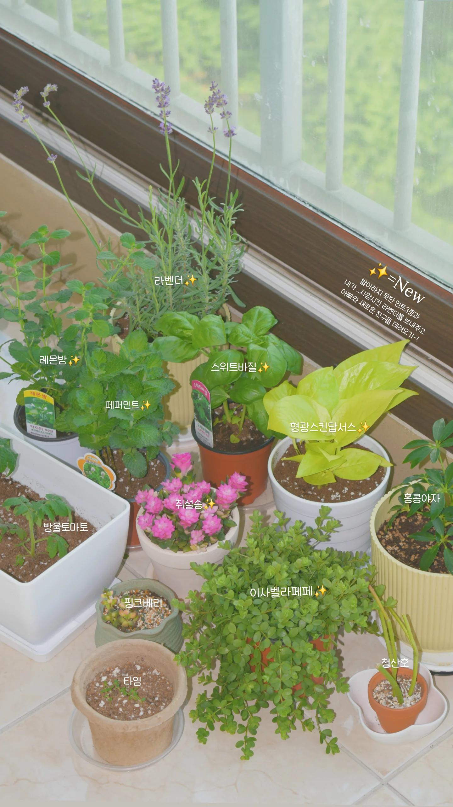
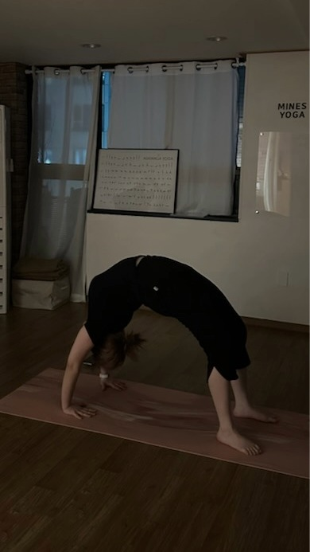
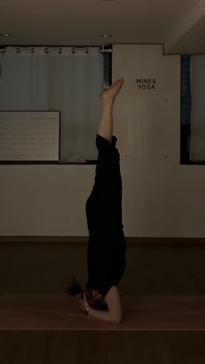

😴 10:00 꿀잠
🧹 10:00 스트레칭하고 침대정리+돌돌이
🍳 10:30 여유 있게 아침식사 즐기기
🎵 11:00 방 청소
📖 11:30 경제 혹은 IT 책 읽기

🍽️ 12:00 점심먹고 식후 산책
☕ 13:00 카페가서 부족했던 부분 추가 공부
🌿 17:30 식물 물 주고 가지치기

🧘 18:00 빈야사 플로우 요가
🎮 19:00 프로틴 쉐이크 먹으며 오버워치
📔 21:00 하루를 돌아보며 일기 쓰기
🌙 22:00 잠들기 전 시집 혹은 소설 읽기


📅 작성일: 2026년 7월